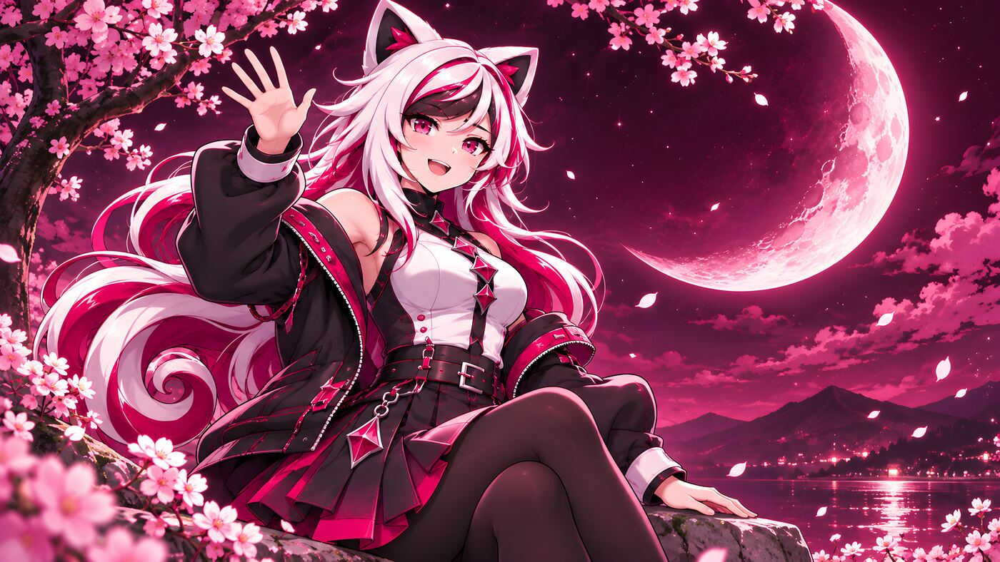
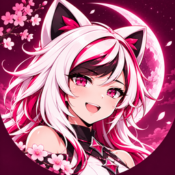
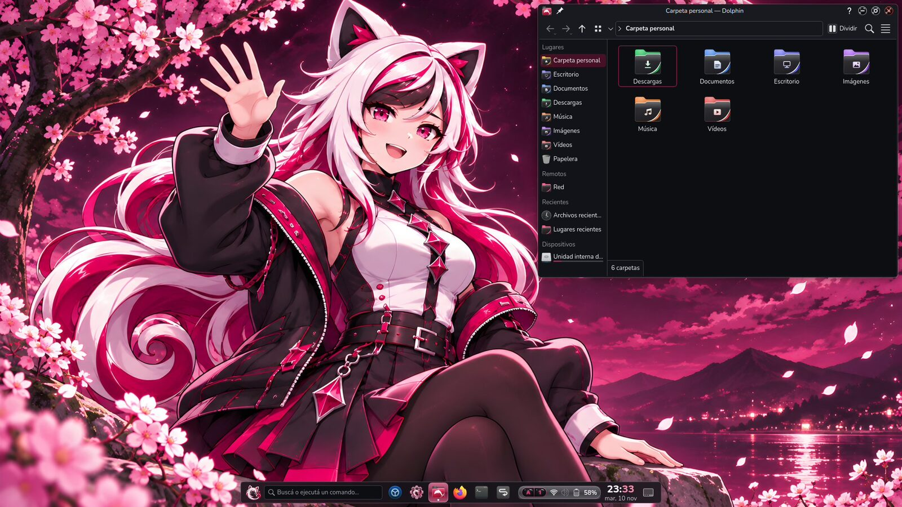
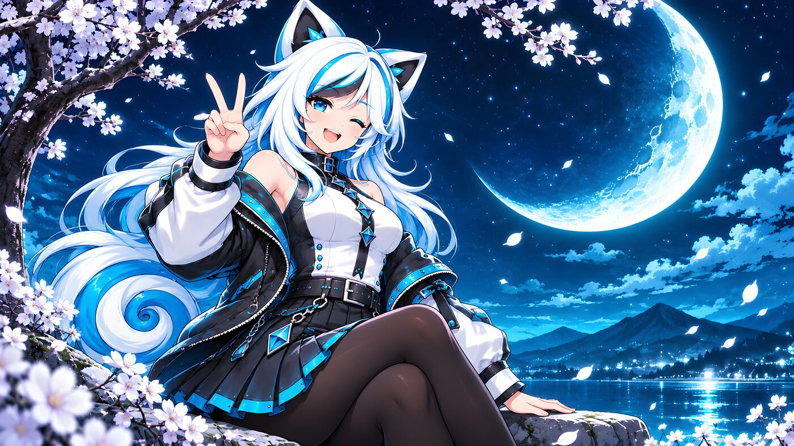
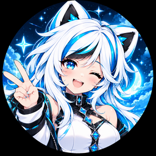
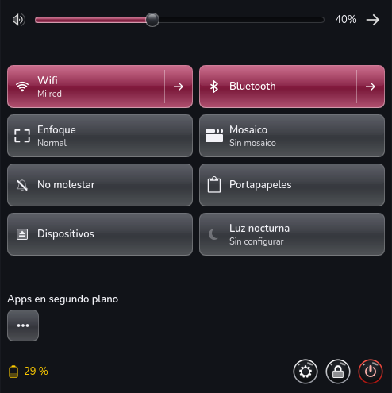
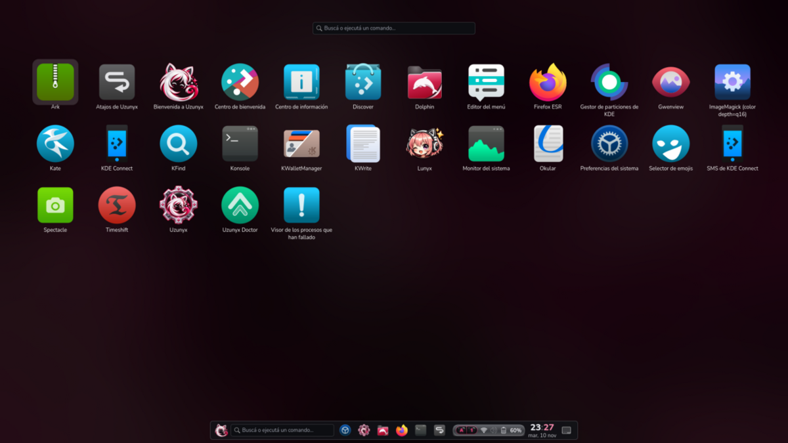
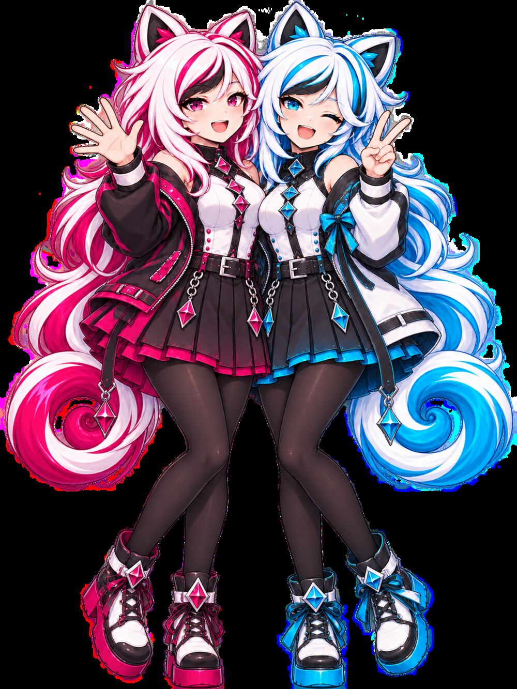

Akane
Carmesí, el color del logo
Una distribución basada en Debian testing con KDE Plasma en Wayland y un escritorio propio: ventanas redondeadas, panel flotante y todo a juego, desde el arranque hasta la terminal.

Akane y Sora comparten todo salvo el acento. Se cambia de una a otra en un clic desde Configuración del sistema, sin tocar el panel ni los iconos.


Carmesí, el color del logo


Cian, como el cielo
También maximizadas, con un margen a los bordes. Firefox, Electron y libadwaita reciben el mismo borde.
Centrado y ajustado al contenido, con gestor de tareas de puntos y un reloj propio. Sigue flotando con ventanas maximizadas.
Los mismos botones de ventana en KDE, GTK, Firefox y Electron.
Ventanas que emergen al abrirse, minimizar con forma de genio y un Alt+Tab en carrusel.
«Principal y pila» o «Espiral», con atajos para la mano izquierda y escritorios dinámicos.
Oh My Zsh, autocompletado en vivo, Atuin y un prompt de Starship en el color de la edición.
Wifi, Bluetooth, sonido, brillo y batería, el reproductor, el portapapeles y las apps en segundo plano, al estilo de GNOME. También avisa si quedó puesto Bloq Mayús.


Las apps a pantalla completa, con un buscador que ejecuta comandos en la terminal, resuelve cuentas e inicia temporizadores: escribe 5m té y listo.
La ISO pesa unos 2 GB. Sirve para PC de 64 bits con BIOS o UEFI.
En un USB, con Balena Etcher, Impression o dd.
Arranca desde el USB: se abre la sesión en vivo, sin tocar el disco, y el instalador.
Al reiniciar, la bienvenida te deja elegir entre Akane y Sora.
Secure Boot todavía no está probado: si la ISO no arranca, desactívalo.
Un solo paquete lleva todo Uzunyx. Pasa el sistema a testing si hace falta (pregunta antes y guarda copia), instala Plasma si falta y después el escritorio.
$ sudo apt install ./uzunyx-installer_*.deb$ sudo uzunyx-install
No soy desarrollador/a: tengo las ideas, decido cómo se ve y cómo se comporta cada cosa, y lo pruebo. El código lo escribió Claude, con Claude Code, y las imágenes las generé con ChatGPT.
Todo se probó en mi PC y en máquinas virtuales, pero nadie lo revisó como lo haría un equipo. Pruébalo primero en una máquina que no te importe. Si encuentras un error, abre un Issue.